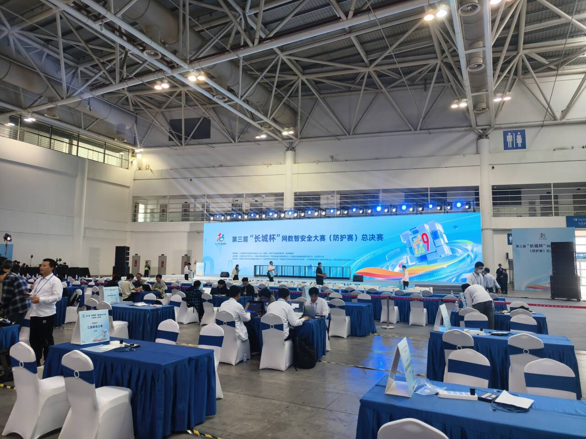
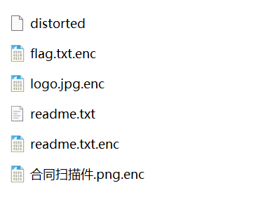
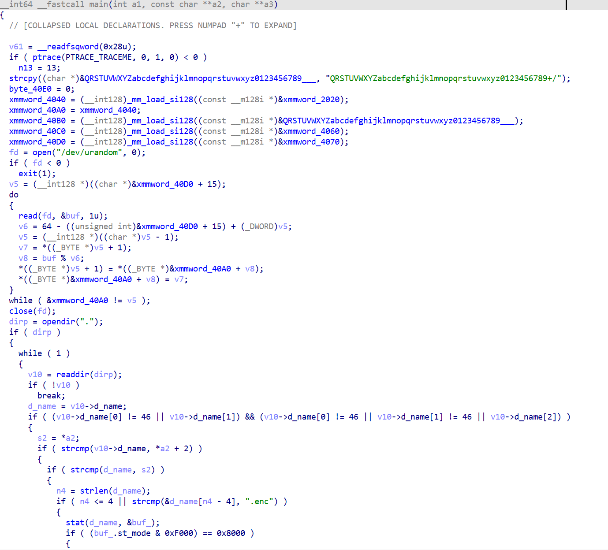
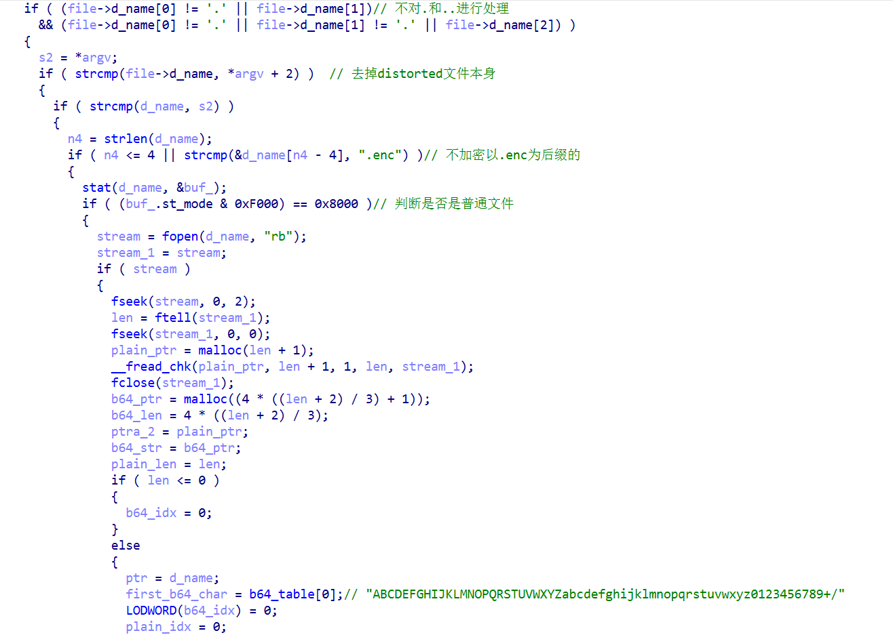
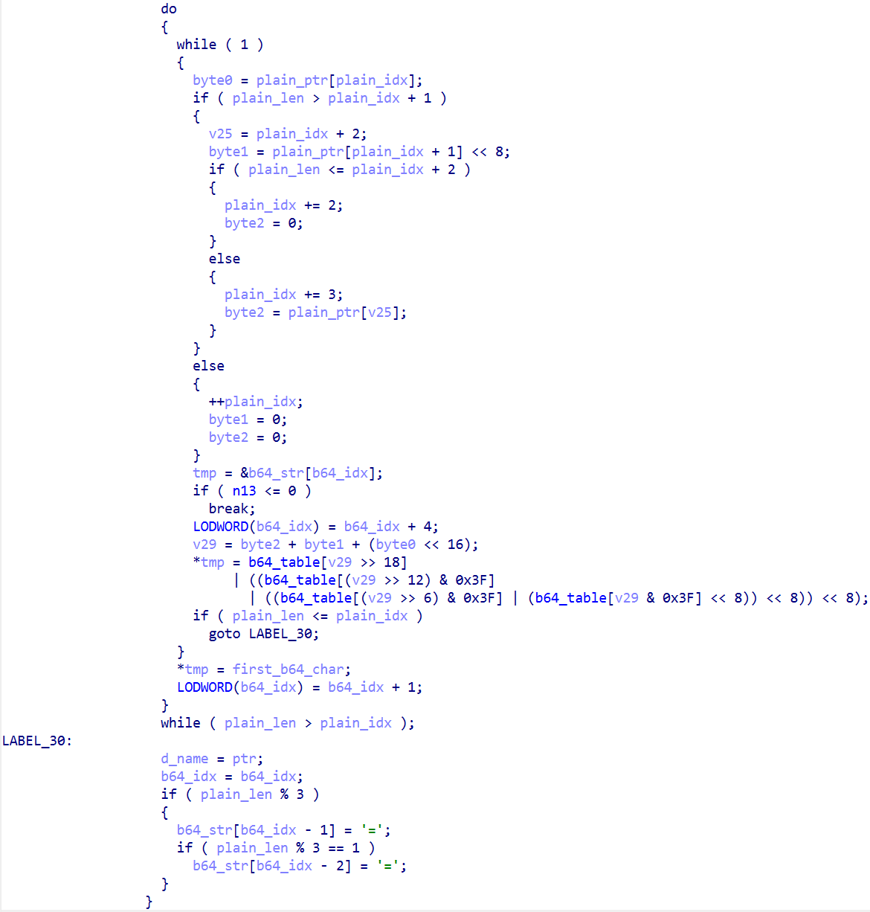
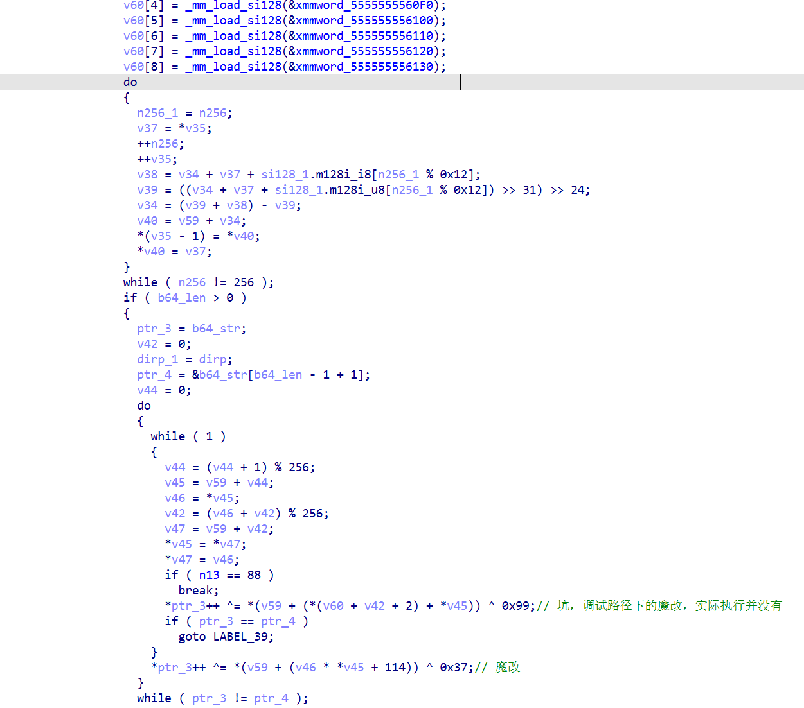
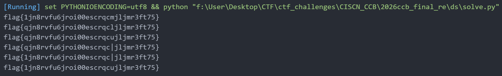

前言 这次福州之行，多少有些意难平
没想到ccb决赛会这么狼狈，知识储备和临场心态都亟待锻炼/(ㄒoㄒ)/~~
不过换个角度看，这可能也是一个重新审视自己的契机，幸运之神并不总会眷顾你，遗憾才是人生常态，自身短板还是很明显的。不过好在CTF生涯还没有完全结束，希望最后的国赛能够给自己一个交代

接下来一段时间会对决赛题目进行逐个复现，并陆续发布到博客上，也算是对自己的一种鞭策吧
题目复现 比赛时最有希望解出的一道题，本身是一道中等难度的题目，就程序逻辑而言还是比较容易看懂的，并且在这次比赛中算为数不多的常规题型了。可惜比赛的时候让我糖完了，频频失误……首先是代码没仔细看，上来就硬调，结果第二行的ptrace竟然没看见？？？真正发现问题的时候已经下午了，但此时心态已经炸裂，写的脚本有点问题，并且没有及时更换策略，最后差一点点就出了，好遗憾
回到题目本身，附件如下：

给出了一个ELF程序、readme.txt和被加密后的readme.txt，以及若干被加密的其他文件，我们的目标肯定是解密flag.txt.enc文件
程序逻辑梳理 首先分析ELF程序，file一下发现没有节表，那么大概率是加壳了
分析可知加的是魔改的UPX壳，并将特征值UPX!替换成了CCB!，改回来用upx -d脱壳即可
定位到main
程序在编译的时候估计开了O2，所以出现了大量SSE指令，同时main函数内的函数基本都被内联了，导致反编译出来的代码比较丑陋

尤其是main函数开头的一堆赋值操作非常迷惑，这里动态调试一下，发现是构建了一个base64标准表，然后通过Fisher-Yates洗牌算法对表进行打乱，随机数通过服务端的/dev/urandom文件给出，我们不知道这个文件的内容，自然也相当于随机了
**注意！！**第二行有个ptrace反调试，这会导致调试状态下的执行路径和正常执行的路径并不相同
接着往下看，大致是实现了一个加密器的功能，运行程序，会将当前目录下所有未加密的文件进行加密，有勒索软件那味，只不过加密后不会删原文件

接着就是使用洗牌置换出的表对文件内容做一个base64编码，注意这个表我们是拿不到的，因为我们并不知道服务器/dev/urandom文件的内容。这里要注意在动调之前需要把ptrace patch掉（甚至当时已经看到对n13的判断了，但还是依旧没看到第一行的ptrace，有点难绷）

接下来是一个魔改RC4，其实还是很好识别的，但反调试依旧埋雷，当时用python调和IDA调的结果一模一样但就是不对，还很疑惑……

那么实际上整个加密器的加密逻辑就比较清晰了：读取当前目录下的所有普通文件，对文件内容进行换表base64编码+魔改RC4，加密结果输出到源文件名.enc中
RC4的密钥已知，是可逆的，那么问题来了，Base64的表我们并不知道，那如何进行解码呢？
解密 我们注意到，附件中给出了一组加密前后的文件：readme.txt和readme.txt.enc
这里立马能想到，我们可以对readme.txt和readme.txt.enc分别做标准base64编码和魔改RC4解密，这样分别能得到readme.txt标准base64和换表base64的编码结果，根据这两组结果，可以尝试去做一个 魔改表->标准表 的字符映射来重建魔改表，然后就可以愉快地解密了
脚本如下：
1 2 3 4 5 6 7 8 9 10 11 12 13 14 15 16 17 18 19 20 21 22 23 24 25 26 27 28 29 30 31 32 33 34 35 36 37 38 39 40 41 42 43 44 45 46 47 48 49 50 import base64import stringdef rc4 (key, data ): S = list (range (256 )) j = 0 out = [] for i in range (256 ): j = (j + S[i] + key[i % len (key)]) % 256 S[i], S[j] = S[j], S[i] i = j = 0 for char in data: i = (i + 1 ) % 256 j = (j + S[i]) % 256 S[i], S[j] = S[j], S[i] char ^= S[(S[i] * S[j] + 114 ) % 256 ] ^ 0x37 out.append(char) return bytes (out) with open ('flag.txt.enc' , 'rb' ) as f: flag_ciper = f.read() flag_mod_b64 = rc4(b'CCB_M4gic_K3y_2026' , flag_ciper).decode() with open ('readme.txt' , 'rb' ) as f: readme_plain = f.read() with open ('readme.txt.enc' , 'rb' ) as f: readme_ciper = f.read() readme_std_b64 = base64.b64encode(readme_plain).decode() readme_mod_b64 = rc4(b'CCB_M4gic_K3y_2026' , readme_ciper).decode() std_table = string.ascii_uppercase + string.ascii_lowercase + string.digits + "+/" mod_table_list = ['?' ]*64 for i in range (len (readme_std_b64)): mod_table_list[std_table.index(readme_std_b64[i])] = readme_mod_b64[i] mod_table = '' .join(mod_table_list) print (mod_table)
然鹅，单凭readme.txt和readme.txt.enc这一组输入输出不足以重建魔改表，mod_table中有6个问号
1 2 3 4 5 6 7 8 9 10 visited = {ch: 0 for ch in std_table} miss = [] for ch in mod_table: if ch in visited: visited[ch] = 1 for k, v in visited.items(): if v == 0 : miss.append(k)
对应的6个不确定字符分别为：
1 ['H', 'Q', 'X', 't', '5', '6']
6个字符不确定位置，那么对应的情况就是6的全排列6!=720种，对于爆破来说数目很小，时间上肯定没啥问题，关键是我们要明确爆破成功的判定条件，就是通过限定条件对结果进行过滤，如flag格式必须是flag{xxx}并且flag必须是可打印字符，甚至可能会用到jpg.enc和png.enc这两个文件
但是，针对这道题来讲，第一个限定条件已经完全足够了，比赛的时候也是晕了，竟然不先试试这个最简单的判定条件
1 2 3 4 5 6 7 8 9 10 11 12 13 14 15 16 17 18 19 20 21 22 23 24 25 26 27 28 29 30 31 32 33 34 35 36 37 38 39 40 41 42 43 44 45 46 47 48 49 50 51 52 53 54 55 56 57 58 59 60 61 62 63 64 65 66 67 68 69 70 71 72 73 74 75 76 77 78 79 80 81 82 83 84 85 86 87 88 89 90 91 92 93 import base64import itertoolsimport stringdef rc4 (key, data ): S = list (range (256 )) j = 0 out = [] for i in range (256 ): j = (j + S[i] + key[i % len (key)]) % 256 S[i], S[j] = S[j], S[i] i = j = 0 for char in data: i = (i + 1 ) % 256 j = (j + S[i]) % 256 S[i], S[j] = S[j], S[i] char ^= S[(S[i] * S[j] + 114 ) % 256 ] ^ 0x37 out.append(char) return bytes (out) def mod2std (mod_b64, mod_table ): trans = str .maketrans(mod_table + '=' , std_table + '=' ) return mod_b64.translate(trans) with open ('flag.txt.enc' , 'rb' ) as f: flag_ciper = f.read() flag_mod_b64 = rc4(b'CCB_M4gic_K3y_2026' , flag_ciper).decode() with open ('readme.txt' , 'rb' ) as f: readme_plain = f.read() with open ('readme.txt.enc' , 'rb' ) as f: readme_ciper = f.read() readme_std_b64 = base64.b64encode(readme_plain).decode() readme_mod_b64 = rc4(b'CCB_M4gic_K3y_2026' , readme_ciper).decode() std_table = string.ascii_uppercase + string.ascii_lowercase + string.digits + "+/" mod_table_list = ['?' ]*64 for i in range (len (readme_std_b64)): mod_table_list[std_table.index(readme_std_b64[i])] = readme_mod_b64[i] mod_table = '' .join(mod_table_list) visited = {ch: 0 for ch in std_table} miss = [] for ch in mod_table: if ch in visited: visited[ch] = 1 for k, v in visited.items(): if v == 0 : miss.append(k) results = [] unknown_indexes = [i for i, ch in enumerate (mod_table_list) if ch == '?' ] for perm in itertools.permutations(miss): table_list = mod_table_list[:] for idx, ch in zip (unknown_indexes, perm): table_list[idx] = ch table = '' .join(table_list) flag_std_b64 = mod2std(flag_mod_b64, table) flag = base64.b64decode(flag_std_b64) results.append(flag) results = list (set (results)) for item in results: if item.startswith(b'flag{' ) and item.endswith(b'}' ) and all (32 <= ch < 127 for ch in item): print (item.decode())
最终解出来只有以下6种情况，并且其中两个带”|”的flag可以直接排除，只有四种可能性，10次提交机会完全够了。可惜当时看到有6个字符不确定后没尝试爆破直接去捣鼓图片了，但仅靠图片的文件头其实不能确定整个表，当时还以为是自己的问题，一直死磕，最后还把自己写晕了，悲（

后面研究了一下如何通过图片来获得唯一解，具体来说，只靠jpg的文件头和文件尾，以及png的文件头，是不能确定唯一解的，这里需要用到一个叫做Pillow的图像处理库，它可以用于验证图片格式是否合法，我们用候选的表对jpg.enc和png.enc的RC4解密结果做解码，再通过Pillow检查图片格式，即可唯一确定魔改表，进而确定唯一flag
校验函数如下：
1 2 3 4 5 6 7 8 9 from PIL import Imagedef is_valid_image (data, fmt ): try : with Image.open (io.BytesIO(data)) as img: img.verify() return img.format == fmt except Exception: return False
data表示图片对应的原始字节，fmt表示期望的图片格式“PNG”、“JPEG”（jpg要写成JPEG）
完整脚本如下：
1 2 3 4 5 6 7 8 9 10 11 12 13 14 15 16 17 18 19 20 21 22 23 24 25 26 27 28 29 30 31 32 33 34 35 36 37 38 39 40 41 42 43 44 45 46 47 48 49 50 51 52 53 54 55 56 57 58 59 60 61 62 63 64 65 66 67 68 69 70 71 72 73 74 75 76 77 78 79 80 81 82 83 84 85 86 87 88 89 90 91 92 93 94 95 96 97 98 99 100 101 102 103 104 105 106 107 108 109 110 111 112 113 114 115 116 117 118 119 120 121 122 123 124 125 126 127 128 129 130 131 132 133 134 135 136 137 138 139 140 141 142 143 144 145 import base64import ioimport itertoolsimport stringfrom PIL import Imagedef rc4 (key, data ): S = list (range (256 )) j = 0 out = [] for i in range (256 ): j = (j + S[i] + key[i % len (key)]) % 256 S[i], S[j] = S[j], S[i] i = j = 0 for char in data: i = (i + 1 ) % 256 j = (j + S[i]) % 256 S[i], S[j] = S[j], S[i] char ^= S[(S[i] * S[j] + 114 ) % 256 ] ^ 0x37 out.append(char) return bytes (out) def mod2std (mod_b64, mod_table ): trans = str .maketrans(mod_table + '=' , std_table + '=' ) return mod_b64.translate(trans) def is_valid_image (data, fmt ): try : with Image.open (io.BytesIO(data)) as img: img.verify() return img.format == fmt except Exception: return False with open ('flag.txt.enc' , 'rb' ) as f: flag_ciper = f.read() flag_mod_b64 = rc4(b'CCB_M4gic_K3y_2026' , flag_ciper).decode() with open ('readme.txt' , 'rb' ) as f: readme_plain = f.read() with open ('readme.txt.enc' , 'rb' ) as f: readme_ciper = f.read() readme_std_b64 = base64.b64encode(readme_plain).decode() readme_mod_b64 = rc4(b'CCB_M4gic_K3y_2026' , readme_ciper).decode() std_table = string.ascii_uppercase + string.ascii_lowercase + string.digits + "+/" mod_table_list = ['?' ]*64 for i in range (len (readme_std_b64)): mod_table_list[std_table.index(readme_std_b64[i])] = readme_mod_b64[i] mod_table = '' .join(mod_table_list) visited = {ch: 0 for ch in std_table} miss = [] for ch in mod_table: if ch in visited: visited[ch] = 1 for k, v in visited.items(): if v == 0 : miss.append(k) unknown_indexes = [i for i, ch in enumerate (mod_table_list) if ch == '?' ] with open ('logo.jpg.enc' , 'rb' ) as f: jpg_ciper = f.read() with open ('合同扫描件.png.enc' , 'rb' ) as f: png_ciper = f.read() jpg_mod_b64 = rc4(b'CCB_M4gic_K3y_2026' , jpg_ciper).decode() png_mod_b64 = rc4(b'CCB_M4gic_K3y_2026' , png_ciper).decode() results = [] for perm in itertools.permutations(miss): table_list = mod_table_list[:] for idx, ch in zip (unknown_indexes, perm): table_list[idx] = ch table = '' .join(table_list) flag_std_b64 = mod2std(flag_mod_b64, table) jpg_std_b64 = mod2std(jpg_mod_b64, table) png_std_b64 = mod2std(png_mod_b64, table) flag_raw = base64.b64decode(flag_std_b64) jpg_data = base64.b64decode(jpg_std_b64) png_data = base64.b64decode(png_std_b64) if not ( flag_raw.startswith(b'flag{' ) and flag_raw.endswith(b'}' ) and all (32 <= ch < 127 for ch in flag_raw) ): continue if not ( jpg_data.startswith(b'\xff\xd8\xff' ) and jpg_data.endswith(b'\xff\xd9' ) and png_data.startswith(b'\x89PNG\r\n\x1a\n' ) and is_valid_image(jpg_data, 'JPEG' ) and is_valid_image(png_data, 'PNG' ) ): continue results.append(( flag_raw.decode(), table, flag_std_b64, jpg_data, png_data, )) print ('候选解数量: ' , len (results), '\n' )for flag, table, b64, jpg_data, png_data in results: print ('table : ' , table) print ('flag : ' , flag) print ('flag标准base64: ' , b64, '\n' ) for i, (flag, table, b64, jpg_data, png_data) in enumerate (results): jpg_name = f'logo_candidate_{i} .jpg' with open (jpg_name, 'wb' ) as f: f.write(jpg_data) png_name = f'ht_candidate_{i} .png' with open (png_name, 'wb' ) as f: f.write(png_data) print ('jpg_name: ' , jpg_name) print ('png_name: ' , png_name) print ('flag: ' , flag) print ('table: ' , table, '\n' )